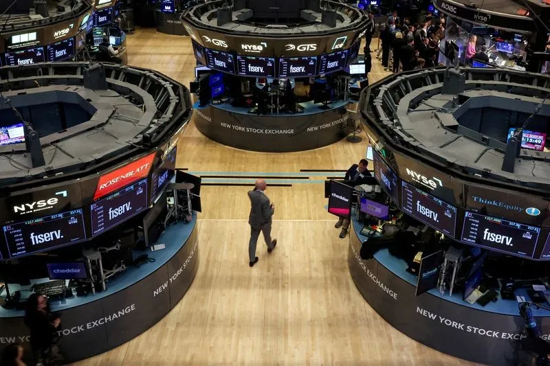

Breaking News
 July 14
July 14
by James Thornton
Major U.S. banks begin the Q2 2026 earnings season as investors monitor profits, consumer spending, loan growth, AI investments, and the U.S. economy
Wall Street is shifting focus to the US banking sector as some of the country’s biggest financial firms begin to report their second-quarter 2026 earnings. The earnings season, one of the most powerful indicators for the state of the US economy as a whole, is dominated by the banking giants JPMorgan Chase, Bank of America, Citigroup, Goldman Sachs and Wells Fargo. Business people, investors, analysts and lawmakers all watch the quarterly numbers closely for clues about changes in consumer spending, bank lending to businesses, investment bank activity and credit quality. The quarter has been marked by heightened economic volatility as markets watch inflation, Federal Reserve interest rate forecasts and the growing significance of artificial intelligence in finance. Weaker-than-expected results could raise worries about slowing consumer demand or tighter financial conditions, but strong earnings can boost confidence in the health of the US economy. Investor confidence will be affected when the real earnings season starts and the top U.S. banks report.
The country’s largest banks traditionally start the second-quarter earnings season and their performance is often used as a benchmark for corporate America. Financial giants like JPMorgan Chase, Bank of America, Citigroup, Goldman Sachs, and Wells Fargo manage trillions of dollars in assets and serve millions of consumers and businesses throughout the United States. Market participants watch these earnings closely because banks provide an early snapshot of economic activity. Revenue growth, profitability and management guidance are often clues to whether consumers are still spending confidently, businesses are willing to borrow and corporations are expanding investments. Good news from these financial giants often helps restore investors’ faith ahead of earnings reports from hundreds of other publicly traded companies.
Loan growth is one of the most closely watched metrics in the results of a bank. Strong credit activity means people are buying homes and cars, firms are investing and the economy is still doing well.” A slowdown in loan demand could reflect increased caution among households and businesses due to higher borrowing costs. Consumer spending is still an important indicator. Banks process billions of credit card transactions and customer payments every quarter, and they provide important information about the financial health of households. Investors will be looking for the level of credit card use, deposits, mortgage activity and default rates to see whether American consumers are still holding up economic growth in the face of inflation and high interest rates.
But Wall Street also watches the trading and investment banking businesses closely, in addition to the usual banking businesses. Firms such as Goldman Sachs and JPMorgan Chase earn their money from market volatility, mergers and acquisitions, public offerings and debt issuance. Investment banking activity picked up in the second quarter on stronger corporate financing and revived capital market activity.» Analysts say that although investment banks will continue to help companies with acquisitions and strategic transactions, there will be greater volatility at trading desks. This data will allow investors to judge whether financial markets are still operating in the face of continued economic uncertainty.”
One of the most important themes on earnings calls is AI investment as AI continues to transform the financial services industry. American banks are ramping up their investments in AI for customer service, fraud detection, cybersecurity, compliance monitoring and operational automation to improve productivity and reduce costs. Executives are expected to revise targets for long-term gains in productivity, technology spending and adoption of AI. For investors, the correct use of AI is often seen as a competitive advantage, which should lead to higher customer satisfaction and profits. As IT budgets expand, management’s comments about typical artificial intelligence systems could be just as relevant as conventional financial metrics.
This week banks are reporting earnings and investors are closely watching for Federal Reserve policy decisions and inflation data. Higher rates have generally resulted in wider lending spreads that have helped to boost bank net interest income. But long periods of high rates could dampen demand for borrowing and increase credit risks. There will be a lot of focus on management’s outlook for the remainder of 2026. The executives are expected to discuss consumer credit quality expectations, commercial lending, economic growth, regulatory developments, and potential changes to monetary policy. Investors will comb through their data to see whether the U.S. economy will continue to grow or face more headwinds in the latter half of the year.
U.S. banking industry in the spotlight as the second quarter 2026 earning season kicks off. Results from the country’s biggest financial institutions will give key clues on the health of the US economy and set the tone for the rest of the corporate earnings season. Investors will be seeking management guidance on profitability, consumer spending, loan growth, investment banking and artificial intelligence projects in the coming months. Optimistic projections and the better-than-expected earnings of the major banks could go a long way toward boosting market confidence. Markets could become more volatile if credit conditions worsen, consumer demand declines or outlooks turn more cautious. Wall Street will digest the earnings, but the banking sector is likely to rule the U.S. financial markets for the rest of 2026.

James Thornton is a U.S. business reporter covering markets, technology, and economic policy.